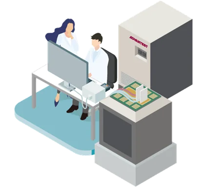
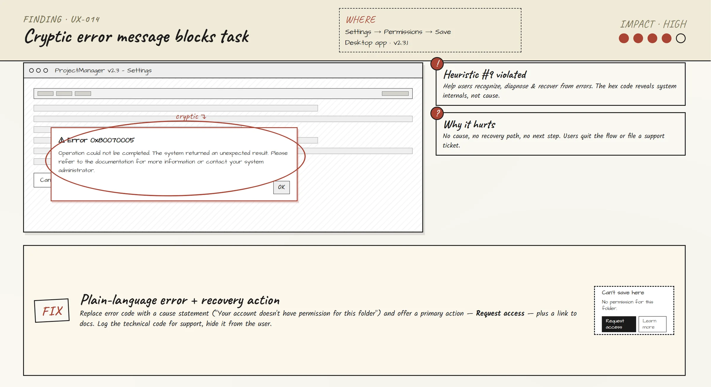

Case Study · Nov 2024 – Apr 2025
Bringing UX into a world that had never seen it
A UX exploration and heuristic evaluation of industrial chip-testing software at Advantest. Without a structured brief or guide, I turned an ambiguous situation into a concrete, actionable deliverable that brought a new conversation about design within the organisation.

01 - OVERVIEW
The Challenge
Advantest develops hardware for chip testing, at the same time they develop highly technical software for these machines. Their products are used by engineers, not everyday consumers. Before my arrival, there had not been a UX or UI role. My original goal was to immerse myself in the product and find a usability topic for my Master’s thesis. However, I also had to create my own path within the process.
Complex enterprise software with no UX or UI foundation
The software had been built entirely by engineers for engineers. The collaboration of different teams for the same software left many inconsistencies within the UI. The software had never been formally evaluated and there was no design process in place.
Find a way to contribute meaningfully
With no assigned activities, or previous path to follow, I had to identify where I could add the most value to the team.
02 - PROCESS
Steps Taken
- 1
Immersion
Attended meetings across SW development teams (team leaders, developers, application engineers).
- 2
Customer training
Completed the official course in how to work with the software for chip testing purposes.
- 3
Exploration
Explored the software interface looking for usability patterns and pain points.
- 4
Heuristic evaluation
Documented each issue found against established heuristics and usability principles.
- 5
Reporting
Compiled findings into a structured report with issue descriptions, principles and suggested solutions.
03 - RESEARCH
Learning the product from inside out
Without a formal guide, I took initiative and embedded myself across the organisation. I sat in on meetings with team leaders, software developers, engineers working directly with customers, and people running what they called “usability testing”, a process far from a formal UX process. I also completed the official customer training course, which gave me a rare dual perspective: I understood both the technical side of the product and the experience as a first-time software user.

Lack of consistency
Through the features of the software it was clear that different teams collaborate for different features for the same platform.
No formal usability evaluation process existed
Interface decisions were made within development teams, creating an opportunity to explore structured UX thinking for the first time.
Technical background opened doors
My mechatronics background meant I could engage with engineers and understand product constraints.
04 - DESIGN
From observations to actionable findings
After my immersion across teams and hands-on experience with the software, I identified +15 usability issues across the interface. Each finding was documented with a description of the issue, the heuristic or usability principle it related to and a concrete suggested solution. Nielsen’s heuristics and Gestalt principles were used as a reference. My goal was to give the development teams a practical resource they could act on.
05 - OUTCOMES
Results and Impact
This internship pushed me in ways I didn’t expect. Working in a highly technical environment, with no existing UX/UI role or department, allowed me to explore how to communicate the value of design to people who were not familiar with it before and doing it in their language. My engineering background was essential: without it, I wouldn’t have been able to understand developments teams and the constraints shaping the product. Knowing that my report sparked genuine interest in integrating usability expertise into future development processes made the experience meaningful to me.
NEXT